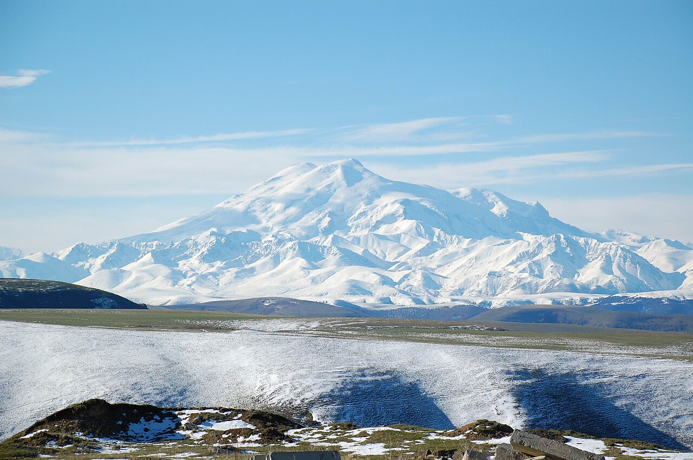
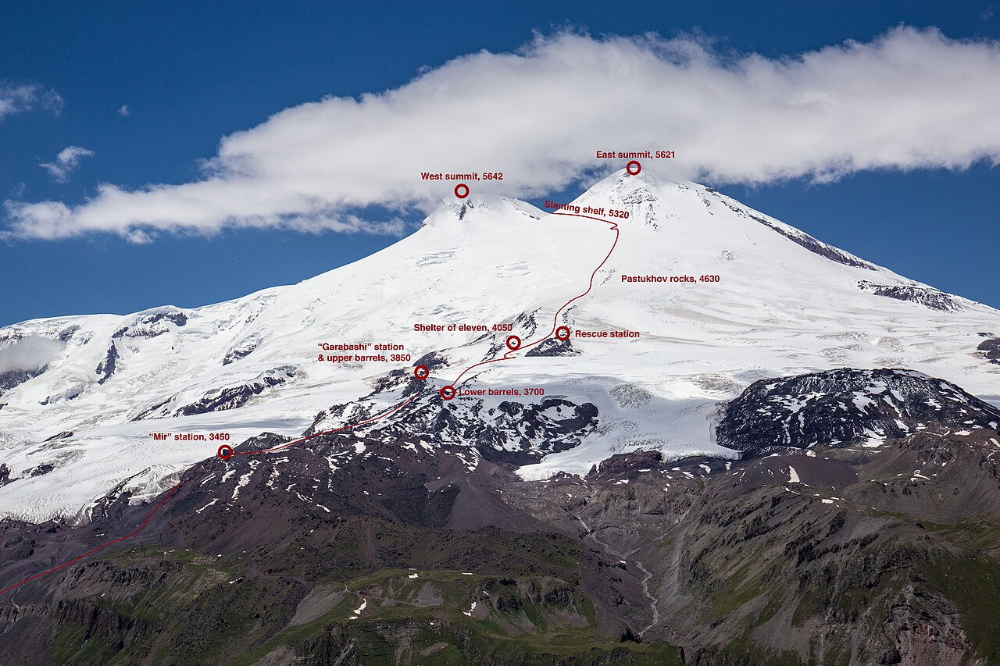

Elbrusz
Magasság:
5642 m
Ország:
Oroszország
Hegység:
Nagy-Kaukázus
Első megmászás:
- Florence Crauford Grove
- Frederick Gardner
- Horace Walker
- Peter Knubel
- Ahija Szottajev
Wikipedia

Számos mászóútvonal létezik a Mount Elbrusz csúcsának elérésére, amelyek többsége a Prielbruszje Nemzeti Parkon keresztül, annak délkeleti oldaláról közelíti meg a hegyet.

1. Déli útvonal (Normál útvonal):
A legkönnyebb, legbiztonságosabb és legnépszerűbb útvonal, a hegymászók 80-90%-a ezt választja.
Főbb részletek: Az Azau-völgyből indul. Egy felvonórendszer visz fel a Garabashi menedékházakig („Hordók”) 3847 méteres magasságba. A csúcstámadás napján lánctalpas hómaróval (snowcat) akár a Pasztuhov-sziklákig (4600-4800 m) is fel lehet utazni, hogy lerövidítsd a mászási időt.
Cél: A magasabb, Nyugati-csúcsra (5642 m) vezet.
2. Északi útvonal:
Az 1829-es legelső sikeres megmászás történelmi útvonala, amely igazi vadon élményt nyújt.
Főbb részletek: Dzsili-Szu (Dzhily-Su) mellől indul. Itt nincsenek felvonók, menedékházak vagy lánctalpas gépek, így a teljes felszerelésedet magadnak kell vinned, és végig gyalog kell másznod az alaptábortól. A fizikai megterhelés miatt a sikerességi arány alacsonyabb (50% körüli).
Cél: Gyakran a Keleti-csúcsot (5621 m) célozza meg, de a Nyugati is elérhető innen.
3. Keleti útvonal:
Kihívást jelentő, elszigetelt útvonal, amely teljes önellátást igényel.
Főbb részletek: Körülbelül 10 napot vesz igénybe. A mászóknak minden tábori felszerelést és élelmet magukkal kell vinniük, mivel az útvonal mentén nincs kiépített infrastruktúra vagy állandó hegyimentő-szolgálat.
4. Nyugati útvonal:
A hegy legnehezebb és leginkább technikai útvonala.
Főbb részletek: Haladó hegymászó tapasztalatot igényel, beleértve a meredek sziklamászást, a gleccsereken való átkelést és a kötélpartiban történő haladást.
Vissza
Mont Blanc